9.1(a). Explain the differences among the figures.
The ACF plots show the autocorrelations of white noise series with different sample sizes. The series containing 36 observations has wider confidence limits than the series containing 360 observations. This occurs because the confidence limits depend on the number of observations and become narrower as the sample size increases. For white noise, most autocorrelations are expected to fall within the confidence limits, although a few may fall outside by chance. Therefore, the plots can be used to assess whether the series exhibit significant autocorrelation.
9.1(b). Why are the critical values at different distances from the mean of zero? Why are the autocorrelations different in each figure when they each refer to white noise?
The critical values are at different distances from zero because the three white noise series have different sample sizes. The confidence limits are calculated using approximately ±1.96/√T, where T represents the number of observations. As the sample size increases, the confidence limits become narrower because the estimated autocorrelations become more precise. Although all three series represent white noise, their sample autocorrelations are different because each series contains different randomly generated observations. The theoretical autocorrelation of white noise is zero at all nonzero lags, but the sample autocorrelations may fluctuate around zero due to random variation. With larger sample sizes, these fluctuations generally become smaller, explaining why the autocorrelations in the third figure are closer to zero than those in the first figure.
9.2 A classic example of a non-stationary series are stock prices. Plot the daily closing prices for Amazon stock (contained in gafa_stock), along with the ACF and PACF. Explain how each plot shows that the series is non-stationary and should be differenced.
library(fpp3)
Warning: package 'fpp3' was built under R version 4.5.2
── Conflicts ────────────────────────────────────────── tidyverse_conflicts() ──
✖ dplyr::filter() masks stats::filter()
✖ tsibble::interval() masks lubridate::interval()
✖ dplyr::lag() masks stats::lag()
ℹ Use the conflicted package (<http://conflicted.r-lib.org/>) to force all conflicts to become errors
library(ggplot2)amazon_closing <- gafa_stock |>filter(Symbol =="AMZN")amazon_closing |>autoplot(Close) +labs(title ="AMAZON Daily Closing Price", y ="Close", x ="Date")
Warning: Provided data has an irregular interval, results should be treated with caution. Computing ACF by observation.
Provided data has an irregular interval, results should be treated with caution. Computing ACF by observation.
Warning: Removed 1 row containing missing values or values outside the scale range
(`geom_line()`).
Warning: Removed 1 row containing missing values or values outside the scale range
(`geom_point()`).
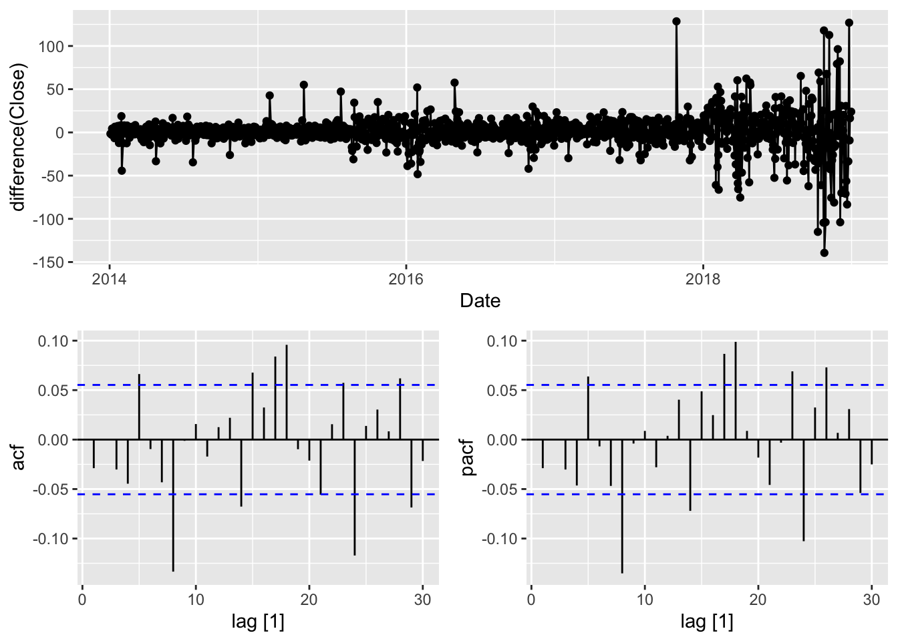
# KPSS test on original seriesamazon_closing |>features(Close, unitroot_kpss)
# A tibble: 1 × 3
Symbol kpss_stat kpss_pvalue
<chr> <dbl> <dbl>
1 AMZN 14.0 0.01
# KPSS test after first differencingamazon_closing |>mutate(diff_Close =difference(Close)) |>features(diff_Close, unitroot_kpss)
# A tibble: 1 × 3
Symbol kpss_stat kpss_pvalue
<chr> <dbl> <dbl>
1 AMZN 0.149 0.1
# Plot original series and differenced series separatelyamazon_closing |>autoplot(Close) +labs(title ="Original Amazon Closing Prices")
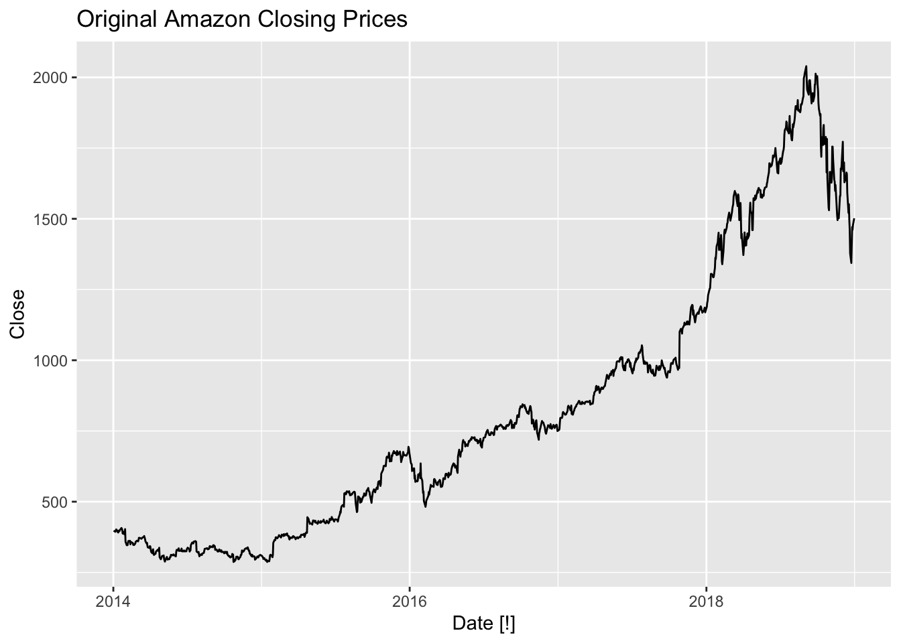
amazon_closing |>autoplot(difference(Close)) +labs(title ="First Difference of Amazon Closing Prices")
Warning: Removed 1 row containing missing values or values outside the scale range
(`geom_line()`).
Warning: Provided data has an irregular interval, results should be treated with caution. Computing ACF by observation.
Provided data has an irregular interval, results should be treated with caution. Computing ACF by observation.
Warning: Removed 1 row containing missing values or values outside the scale range
(`geom_line()`).
Warning: Removed 1 row containing missing values or values outside the scale range
(`geom_point()`).
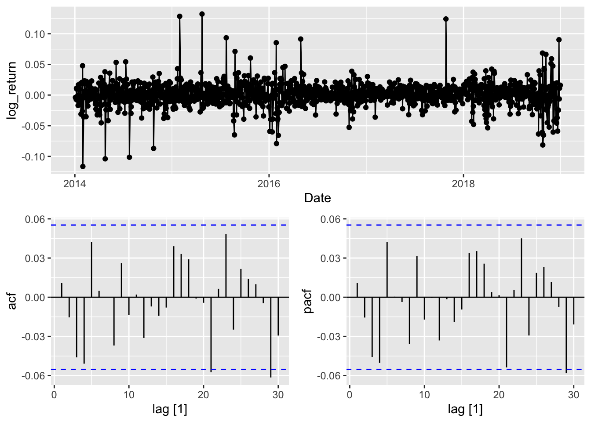
##Interpretation: The ACF plot of Amazon’s daily closing stock prices shows autocorrelations that decrease slowly as the lag increases. This suggests that the original series is non-stationary. The PACF plot may show a strong autocorrelation at the first lag, indicating that the current stock price is strongly related to its previous value. To make the series stationary, first-order differencing can be applied. The ACF and PACF of the differenced series can then be examined to determine whether the trend has been removed and whether any significant autocorrelation remains.
9.3 For the following series, find an appropriate Box-Cox transformation and order of differencing in order to obtain stationary data.
Turkish GDP from global_economy.
global_economy |>distinct(Country)
# A tibble: 263 × 1
Country
<fct>
1 Afghanistan
2 Albania
3 Algeria
4 American Samoa
5 Andorra
6 Angola
7 Antigua and Barbuda
8 Arab World
9 Argentina
10 Armenia
# ℹ 253 more rows
# A tibble: 1 × 3
Country kpss_stat kpss_pvalue
<fct> <dbl> <dbl>
1 Turkey 0.0889 0.1
difference_trans |>ACF(diff_GDP) |>autoplot()
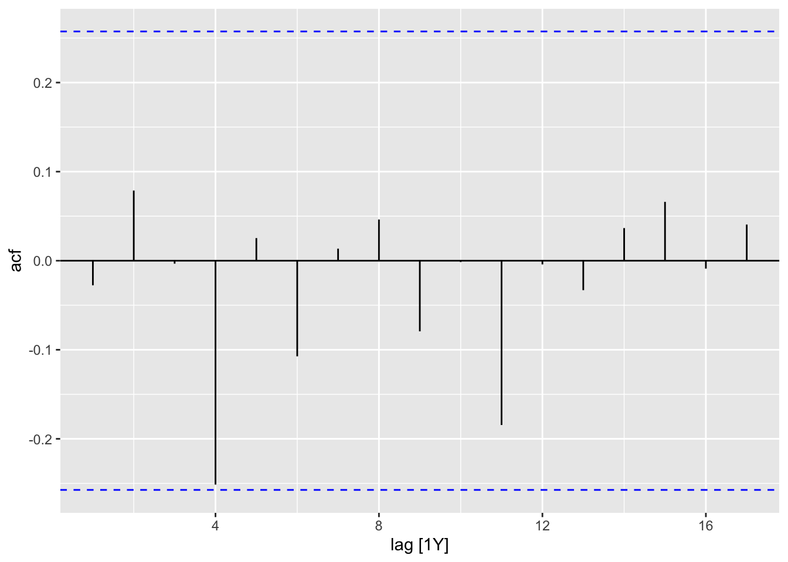
##Interpretation:
The original Turkish GDP series exhibits a strong upward trend, suggesting non-stationarity. A Box-Cox transformation was applied to stabilize the variation, followed by first-order differencing to remove the trend. After differencing, the series fluctuates around a relatively stable level without a clear upward or downward trend. The KPSS test returned a p-value of 0.1, which is greater than 0.05, so we fail to reject the null hypothesis of stationarity. The ACF plot also shows no obvious persistent autocorrelation. Therefore, first-order differencing appears sufficient, and the selected order is d = 1.
Accommodation takings in the state of Tasmania from aus_accommodation.
aus_accommodation |>distinct(State)
# A tibble: 8 × 1
State
<chr>
1 Australian Capital Territory
2 New South Wales
3 Northern Territory
4 Queensland
5 South Australia
6 Tasmania
7 Victoria
8 Western Australia
tasmania_acc <- aus_accommodation |>filter(State =="Tasmania")tasmania_acc |>autoplot(Takings) +labs(title ="Accommodation Takings In The State Of Tasmania")
# A tibble: 1 × 3
State kpss_stat kpss_pvalue
<chr> <dbl> <dbl>
1 Tasmania 0.0474 0.1
diff_tasmania |>ACF(diff_tasm) |>autoplot()
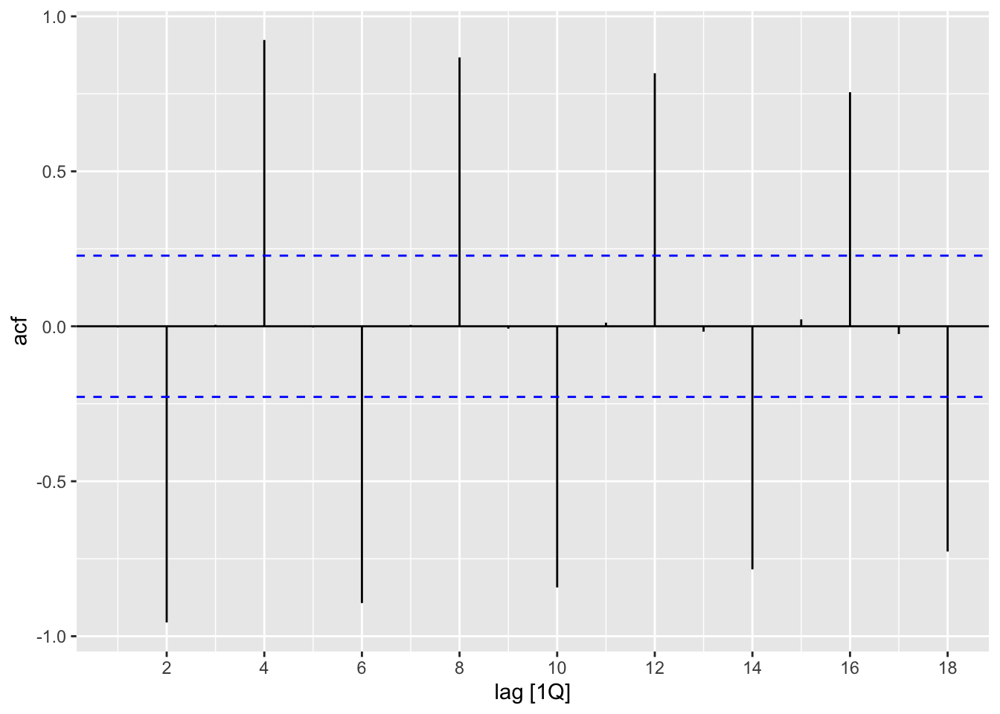
##Interpretation:
The original Tasmania accommodation takings series exhibits an upward trend and strong quarterly seasonality. After applying the Box-Cox transformation, first-order differencing removes much of the trend, but a strong seasonal pattern remains. Seasonal differencing at lag 4 reduces this repeating pattern. Therefore, seasonal differencing is necessary to investigate, and the seasonal and combined differenced series should be compared to determine whether an additional first difference is required.
C. Monthly sales from souvenirs.
# Visualization of the orignal datasouvenirs |>autoplot(Sales) +labs(title ="Monthly Sales")
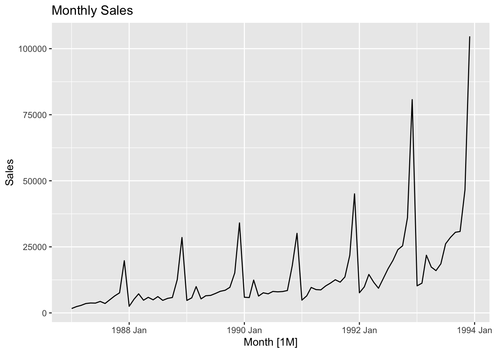
# Box-Cox transformationlambda <- souvenirs |>features(Sales, guerrero) |>pull(lambda_guerrero)souvenirs_trans <- souvenirs |>mutate(box_cox_sales =box_cox(Sales, lambda) )# Compare different differencing approachessouvenirs_diff <- souvenirs_trans |>mutate(first_diff =difference(box_cox_sales),seasonal_diff =difference(box_cox_sales, lag =12),combined_diff =difference(seasonal_diff) )# Plot First differncingsouvenirs_diff |>filter(!is.na(first_diff)) |>autoplot(first_diff) +labs(title ="First Differencing Of Souvenirs Sales")
The original souvenirs sales series exhibits an upward trend and strong annual seasonality. A Box-Cox transformation was applied to stabilize the variation. The seasonal unit root test suggested one seasonal difference (D = 1), while the nonseasonal differencing test applied after seasonal differencing suggested no additional differences (d = 0). Therefore, seasonal differencing at lag 12 appears sufficient based on these tests. The KPSS test of the combined-differenced series returned a statistic of 0.0381 and a p-value of 0.1, indicating insufficient evidence to reject stationarity for that series. A separate KPSS test on the seasonal-only differenced series is needed to support the final selection.
9.4. For the souvenirs data, write down the differences you chose above using backshift operator notation.
For the souvenirs monthly sales data, seasonal differencing with a lag of 12 was selected to remove annual seasonality. The backshift operator (B) shifts an observation backward by one period, while (B^{12}) shifts it backward by 12 months.
The differencing operation is:
[
(1-B^{12})z_t=z_t-z_{t-12}
]
where (z_t) represents the Box-Cox transformed sales. The selected differencing orders are (d=0) and (D=1), with a seasonal period of (m=12).
9.5. For your retail data (from Exercise 7 in Section 2.10), find the appropriate order of differencing (after transformation if necessary) to obtain stationary data.
# A tibble: 1 × 4
State Industry kpss_stat kpss_pvalue
<chr> <chr> <dbl> <dbl>
1 Northern Territory Clothing, footwear and personal acce… 0.0165 0.1
myseries_diff |>ACF(combined_diff)
# A tsibble: 25 x 4 [1M]
# Key: State, Industry [1]
State Industry lag acf
<chr> <chr> <cf_> <dbl>
1 Northern Territory Clothing, footwear and personal accessory r… 1M -0.374
2 Northern Territory Clothing, footwear and personal accessory r… 2M 0.0686
3 Northern Territory Clothing, footwear and personal accessory r… 3M -0.0620
4 Northern Territory Clothing, footwear and personal accessory r… 4M 0.145
5 Northern Territory Clothing, footwear and personal accessory r… 5M -0.104
6 Northern Territory Clothing, footwear and personal accessory r… 6M 0.0301
7 Northern Territory Clothing, footwear and personal accessory r… 7M 0.0762
8 Northern Territory Clothing, footwear and personal accessory r… 8M -0.155
9 Northern Territory Clothing, footwear and personal accessory r… 9M 0.0800
10 Northern Territory Clothing, footwear and personal accessory r… 10M -0.0548
# ℹ 15 more rows
##Interpretation:
The original Australian retail series exhibits an upward trend and strong monthly seasonality. A Box-Cox transformation was applied to stabilize the variation. First-order differencing reduces the trend, but the resulting series still shows strong seasonal fluctuations. Seasonal differencing at lag 12 reduces the repeating seasonal pattern. The combined differenced series fluctuates more consistently around zero, suggesting improved stationarity. The KPSS test and ACF plot can be used to evaluate whether both first-order and seasonal differencing are necessary.
9.6. Simulate and plot some data from simple ARIMA models.
Use the following R code to generate data from an AR(1) model with ϕ1=0.6 and σ2=1. The process starts with y1=0
set.seed(123)y <-numeric(100)e <-rnorm(100)for (i in2:100) { y[i] <-0.6* y[i -1] + e[i]}sim <-tsibble(idx =seq_len(100), y = y, index = idx)# Generate data from AR(1) modelarima_sim <- sim |>model(ARIMA(y, stepwise =FALSE, approx =FALSE))arima_sim
# A mable: 1 x 1
`ARIMA(y, stepwise = FALSE, approx = FALSE)`
<model>
1 <ARIMA(1,0,0)>
The simulated series was generated using an AR(1) process with an autoregressive coefficient of 0.6. The fitted ARIMA(1,0,0) model corresponds to \(p=1\), \(d=0\), and \(q=0\). The model has an AICc of approximately 269.62 and a BIC of 274.71. The residual diagnostics can be examined to determine whether significant autocorrelation remains after fitting the model.
b. Produce a time plot for the series. How does the plot change as you change ϕ1?
set.seed(123)e <-rnorm(100)simulate_ar1 <-function(phi) { y <-numeric(100)for (i in2:100) { y[i] <- phi * y[i -1] + e[i] } y}sim_compare <-tibble(idx =rep(1:100, 3),phi =rep(c("0.2", "0.6", "0.9"), each =100),y =c(simulate_ar1(0.2),simulate_ar1(0.6),simulate_ar1(0.9) ))ggplot(sim_compare, aes(x = idx, y = y)) +geom_line() +facet_wrap(~ phi, ncol =1) +labs(title ="AR(1) Simulation with Different Phi Values",x ="Time",y ="Simulated Values" )
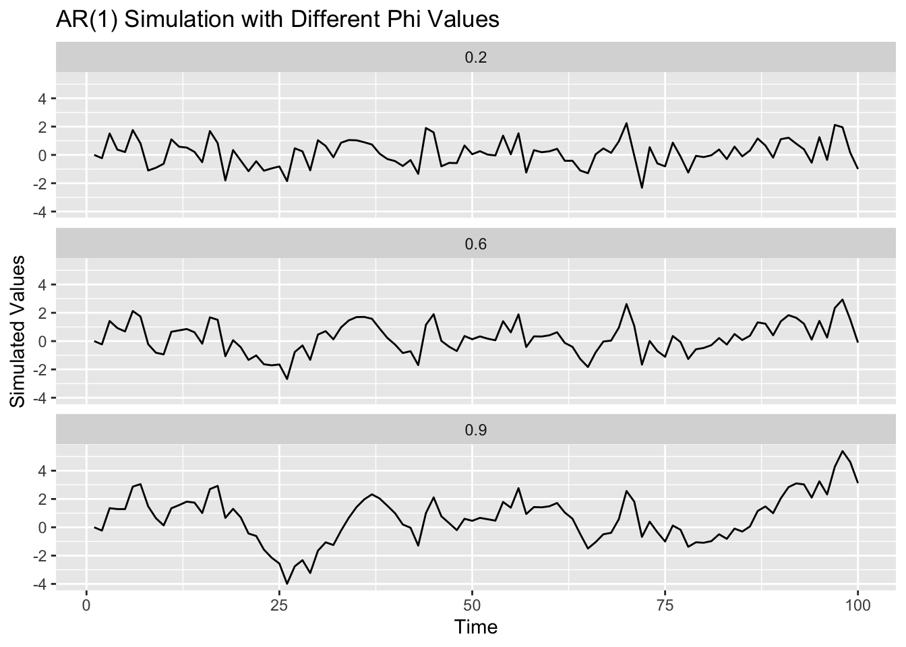
##Interpretation:
The time plots show that the behavior of the AR(1) process changes depending on the value of \(\phi_1\). When \(\phi_1=0.2\), the observations have weak autocorrelation and fluctuate more randomly around zero. When \(\phi_1=0.6\), the observations exhibit greater persistence, meaning that consecutive values tend to be more similar. When \(\phi_1=0.9\), the series shows stronger persistence, and shocks take longer to disappear. Therefore, as \(\phi_1\) approaches 1, the AR(1) process becomes more persistent.
c. Write your own code to generate data from an MA(1) model with θ1=0.6 and σ2=1.
set.seed(1234)y <-numeric(1000)e <-rnorm(1000)for (i in2:1000) { y[i] <- e[i] +0.6* e[i -1]}sim_ma <-tsibble(idx =seq_len(1000), y = y, index = idx)sim_ma |>autoplot(y) +labs(title ="Simulated MA(1) Model",x ="Time",y ="Simulated Values")
D. Produce a time plot for the series. How does the plot change as you change θ1?
set.seed(123)e <-rnorm(100)simulate_ma1 <-function(theta) { y <-numeric(100)for (i in2:100) { y[i] <- e[i] + theta * e[i -1] }return(y)}sim_compare_ma <-tibble(idx =rep(1:100, 3),theta =rep(c("0.2", "0.6", "0.9"), each =100),y =c(simulate_ma1(0.2),simulate_ma1(0.6),simulate_ma1(0.9) ))ggplot(sim_compare_ma, aes(x = idx, y = y)) +geom_line() +facet_wrap(~ theta, ncol =1) +labs(title ="MA(1) Simulation with Different Theta Values",x ="Time",y ="Simulated Values" )
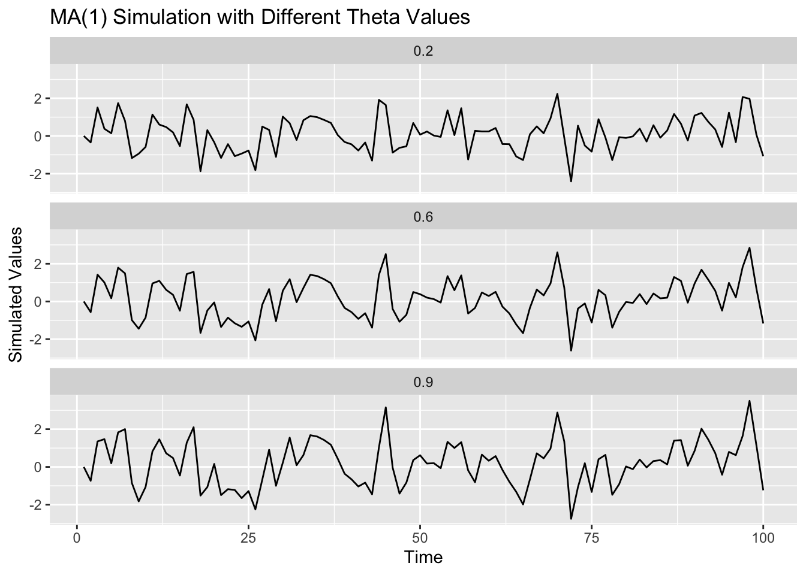
##Interpretation:
As \(\theta_1\) increases from 0.2 to 0.9, the previous error has a stronger influence on the current observation. The lag-1 autocorrelation increases over this range, while the theoretical autocorrelation remains zero beyond lag 1. Unlike an AR(1), the effect of a shock in an MA(1) lasts only through the following observation.
e. Generate data from an ARMA(1,1) model with ϕ1=0.6θ1=0.6 and σ2=1.
The ARMA(1,1) series fluctuates around zero without showing a persistent upward or downward trend, indicating stationary behavior. In contrast, the AR(2) series exhibits increasingly large oscillations as time progresses. This occurs because the AR(2) coefficients violate the stationarity conditions, causing the process to become explosive. Therefore, the ARMA(1,1) series maintains relatively stable variability, whereas the AR(2) series does not.
9.7 Consider aus_airpassengers, the total number of passengers (in millions) from Australian air carriers for the period 1970-2011.
a. Use ARIMA() to find an appropriate ARIMA model. What model was selected? Check that the residuals look like white noise. Plot forecasts for the next 10 periods.
# Plotfc_fit_arima |>autoplot(air_data) +labs(title ="10 Years forecast of Australian Carriers")
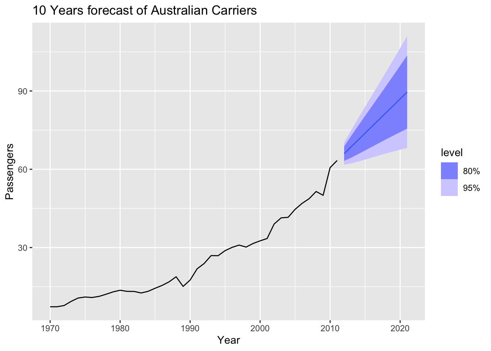
##Interpretation: The automatic ARIMA procedure selected an ARIMA(0,2,1) model for the Australian air passenger series. The model requires second-order differencing and includes one moving-average term with an estimated coefficient of -0.8963. The model has an AICc of 198.32 and a BIC of 201.65. The Ljung–Box test produced a p-value of 0.5697, which is greater than 0.05, indicating insufficient evidence of residual autocorrelation. The ten-year forecast shows continued growth in passenger numbers, while the prediction intervals widen as the forecast horizon increases.
b. Write the model in terms of the backshift operator.
##Interpretation: The selected ARIMA(0,2,1) model can be expressed using the backshift operator as \((1-B)^2y_t=(1-0.8963B)\varepsilon_t\). The operator \((1-B)^2\) represents second-order differencing, which removes non-stationarity from the original series. The moving-average component uses the current error and the previous error, with an estimated coefficient of -0.8963. Therefore, the model describes the second difference of passenger numbers as a function of current and previous random shocks.
c. Plot forecasts from an ARIMA(0,1,0) model with drift and compare these to part a
The forecast comparison shows that both ARIMA(0,2,1) and ARIMA(0,1,0) with drift predict continued growth in Australian air passenger numbers over the next ten years. However, the ARIMA(0,2,1) model produces higher forecasts, reaching approximately 94 million passengers, while the drift model forecasts approximately 86 million. The difference becomes larger as the forecast horizon increases. This occurs because the ARIMA(0,2,1) model extrapolates the estimated recent growth rate, whereas the ARIMA(0,1,0) with drift assumes a constant average annual increase. Both models provide reasonable upward forecasts, but further evaluation would be needed to determine which model is more accurate.
d. Plot forecasts from an ARIMA(2,1,2) model with drift and compare these to parts a and c. Remove the constant and see what happens.
# A tibble: 4 × 3
.model lb_stat lb_pvalue
<chr> <dbl> <dbl>
1 ARIMA_010_Drift 4.92 0.554
2 ARIMA_021 6.00 0.423
3 ARIMA_212_Drift 2.75 0.840
4 ARIMA_212_NoDrift NA NA
# Plotcomparison_fc2 |>autoplot(air_data, level =NULL) +labs(title ="ARIMA Forecast Comparison",subtitle ="Models with and without drift",x ="Year",y ="Passengers (millions)",colour ="Model" ) +theme(legend.position ="bottom")
Warning: Removed 10 rows containing missing values or values outside the scale range
(`geom_line()`).
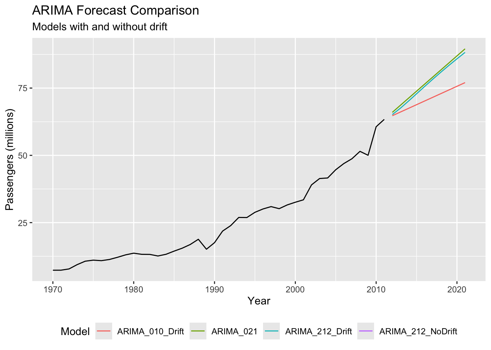
##Interpretation:
Removing the constant changes the long-run forecast behavior. For a stationary differenced ARMA component, the no-drift model’s forecasts eventually flatten, while the drift model can maintain a linear trend.
e. Plot forecasts from an ARIMA(0,2,1) model with a constant. What happens?
Warning: Model specification induces a quadratic or higher order polynomial trend. This
is generally discouraged, consider removing the constant or reducing the number
of differences.
fit_arima_constant
# A mable: 1 x 1
`ARIMA(Passengers ~ 1 + pdq(0, 2, 1))`
<model>
1 <ARIMA(0,2,1) w/ poly>
# Check the residualsfit_arima_constant |>gg_tsresiduals()
# Plotfc_fit_arima |>autoplot(air_data) +labs(title ="10 Years forecast of Australian Carriers")
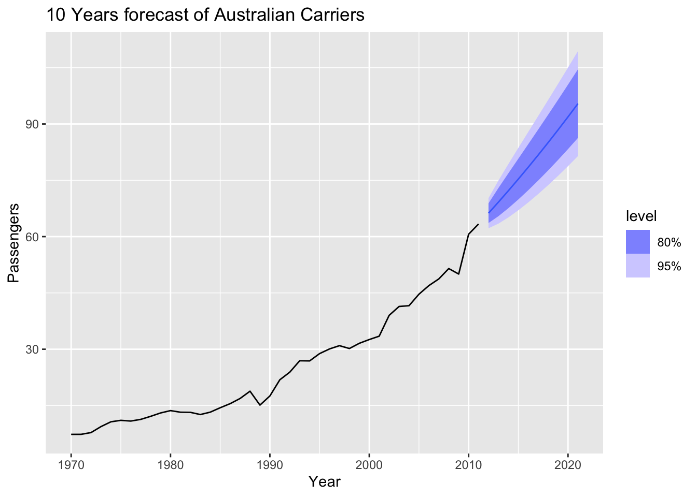
##Interpretation:
When attempting to fit an ARIMA(0,2,1) model with a constant, the software produces a warning because including a constant with second-order differencing introduces a quadratic trend in the forecasts. The ARIMA() function restricts this specification and may remove the constant. Consequently, the resulting forecasts may resemble those from the ARIMA(0,2,1) model without a constant. The warning indicates a model specification restriction rather than simply a decrease in the Ljung–Box p-value.
8 For the United States GDP series (from global_economy)
a. if necessary, find a suitable Box-Cox transformation for the data;
usa_gdp <- global_economy |>filter(Country =="United States")# Plot the original datausa_gdp |>autoplot(GDP) +labs(title ="USA GDP")
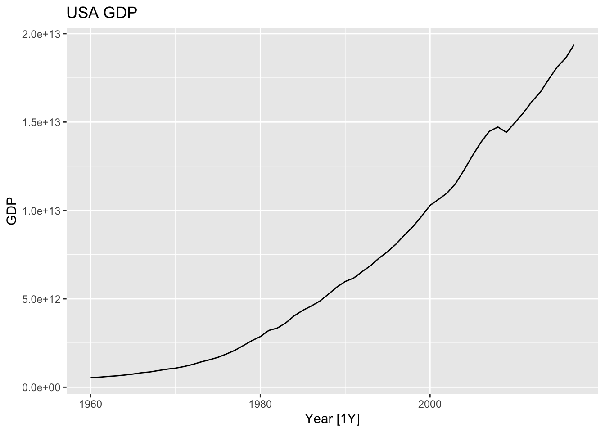
# Find a box cox transformationlambda <- usa_gdp |>features(GDP, guerrero) |>pull(lambda_guerrero)box_cox_trans_usa <- usa_gdp |>mutate(box_cox_usa =box_cox(GDP, lambda))box_cox_trans_usa |>autoplot(box_cox_usa) +labs(title ="Box Cox Transformation of USA GDP")
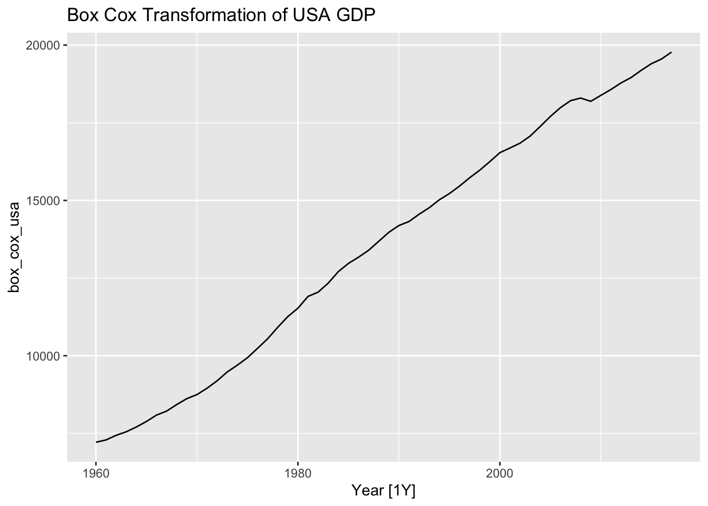
##Interpretation:
The original United States GDP series exhibits a strong upward trend, indicating that GDP has increased substantially over time. A Box-Cox transformation was applied using the Guerrero method to identify a suitable transformation parameter. The transformation aims to stabilize the variance and make the series more appropriate for time series modeling. Further differencing may still be required to achieve stationarity.
b. fit a suitable ARIMA model to the transformed data using ARIMA();
# A mable: 1 x 2
# Key: Country [1]
Country `ARIMA(box_cox_usa, stepwise = FALSE, approx = FALSE)`
<fct> <model>
1 United States <ARIMA(1,1,0) w/ drift>
# A mable: 1 x 2
# Key: Country [1]
Country `ARIMA(box_cox_usa, stepwise = FALSE, approx = FALSE)`
<fct> <model>
1 United States <ARIMA(1,1,0) w/ drift>
# A tibble: 1 × 4
Country .model lb_stat lb_pvalue
<fct> <chr> <dbl> <dbl>
1 United States ARIMA(box_cox_usa, stepwise = FALSE, approx =… 3.81 0.923
##Interpretation:
The residual diagnostics for the selected ARIMA(1,1,0) model show that the residuals fluctuate around zero without a clear systematic pattern. The ACF plot indicates that the residual autocorrelations are within the approximate 95% significance bounds, suggesting that little serial correlation remains. However, the histogram is not perfectly symmetric, and several unusual residuals are present. The Ljung–Box test provides an additional assessment of whether the residuals behave like white noise.
e. produce forecasts of your fitted model. Do the forecasts look reasonable?
# A mable: 1 x 2
# Key: Country [1]
Country `ARIMA(box_cox_usa, stepwise = FALSE, approx = FALSE)`
<fct> <model>
1 United States <ARIMA(1,1,0) w/ drift>
fc_usa <- fit_usa_arima |>forecast(h =4)fc_usa |>autoplot(box_cox_trans_usa) +labs(title ="Four-Year Forecast of US GDP",x ="Year",y ="Box-Cox Transformed GDP" )
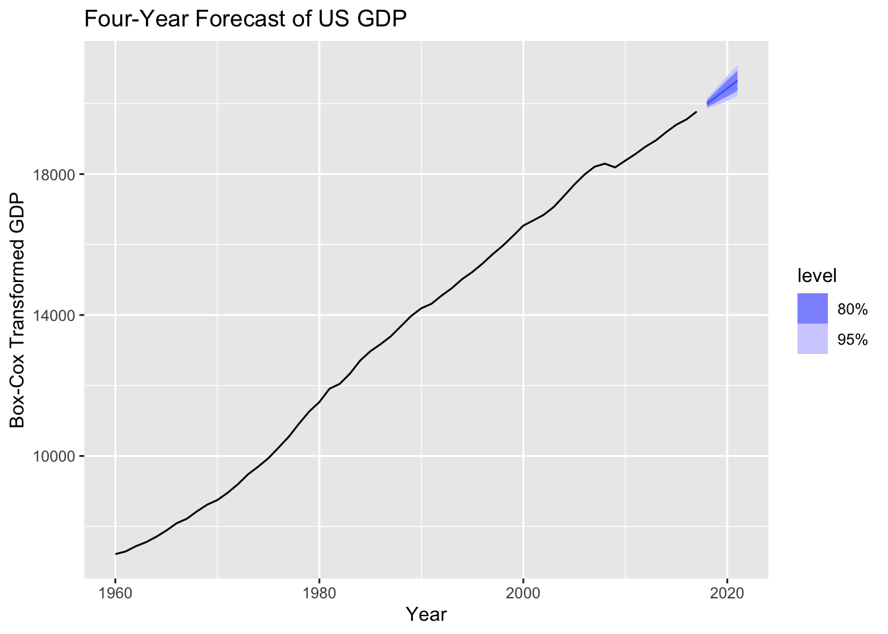
##Interpretattion:
The four-year forecast from the ARIMA model indicates that United States GDP is expected to continue increasing. The forecast follows the historical upward trend, suggesting continued economic growth under the model assumptions. The 80% and 95% prediction intervals become wider over time, indicating increasing uncertainty. Overall, the forecasts appear reasonable based on the historical behavior of the series, although unexpected economic events could cause actual GDP to differ from the predictions.
f. compare the results with what you would obtain using ETS() (with no transformation).
# Fit both modelsusa_comparison <- usa_gdp |>model(ARIMA_BoxCox =ARIMA(box_cox(GDP, lambda),stepwise =FALSE,approx =FALSE ),ETS_Original =ETS(GDP) )# Generate 4-year forecastsusa_fc <- usa_comparison |>forecast(h =4)# Compare point forecasts on original GDP scaleusa_fc |>autoplot(usa_gdp, level =NULL) +labs(title ="US GDP Forecast: ARIMA vs ETS",subtitle ="Four-Year Forecast Comparison",x ="Year",y ="GDP (US dollars)",colour ="Model" ) +theme(legend.position ="bottom")
Both the ARIMA and ETS models forecast continued growth in United States GDP over the next four years. The ARIMA model incorporates first-order differencing and an autoregressive term, while the ETS model represents the series through exponential smoothing components. Comparing their forecasts on the original GDP scale makes it possible to evaluate differences in predicted growth. The models may produce different forecast values and prediction intervals because they represent the underlying time series dynamics differently. Additional forecast accuracy testing would help determine which model provides more reliable predictions.